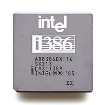
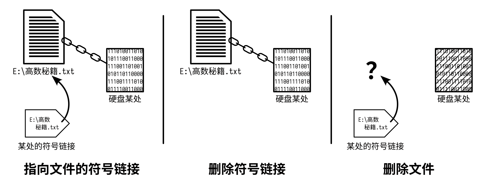
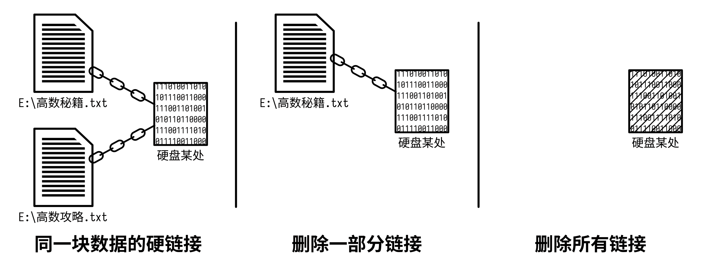
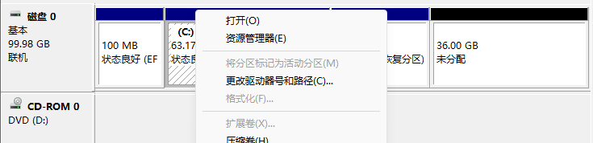

成为空间管理大师 #
本章会为大家在用电脑时非常苦恼的一件事——硬盘空间吃紧，来提供一些建议与小技巧，看完本章，下面的问题你应该有了眉目：
- 为什么我的 C 盘不知不觉就红了？C 盘要多大才合适？
- 分区快满了（「红了」）怎么办？
- 我怎么把我的某个分区扩大/缩小一点？
- 有没有什么办法把 C 盘一些占空间又不能动的东西移到别处去？
在正式进入这一章之前，请大声朗读三遍以下八字真言，并时刻牢记于心：
数据无价，谨慎操作！
Data is Precious, Operate Carefully!
就作者观察到身边朋友所见的电脑日常问题中，除了「软件怎么不能用」「为什么电脑变慢了」这样笼统的问题外，最多的抱怨就是「我电脑又满了」，而这「满」，大部分指的是系统分区 C 盘。本章的所有内容，正是围绕「怎么样让我的电脑不那么满」这一需求展开的。
给 C 盘分点空间 #
早年间，大约到 Windows 7 时代为止，C 盘空间大小并没有今天这般令人苦恼。彼时的日常用户，为 C 盘提供约 60 GB 空间，就能满足这台电脑以后一直使用的需求。Windows 8 系列暂且不论（反正也没多少人用），自 Windows 10 时代开始，系统本身与后续使用对空间的需求似乎迅速提升了。人们想着:「大概为 C 盘分个 100 GB 应该差不多吧。」然而事与愿违，如此想法总是导致了这样的事情：

但是，系统在初装时只占用了 20 至 30 GB 不等的空间，而为空间所困的大家都会想着把软件尽量装到其他分区中，但为何用着用着 C 盘还是变成「红盘」了呢？这是因为软件所占的空间不止是本体，还有它在运行期间所产生的各种数据。

用 WizTree 分析一下 C 盘（详见工具类软件推荐），你可能会发现，占空间最多的部分，除了系统文件夹 Windows 以外，还有应用程序相关的文件夹（Program Files、Program Files (x86)，以及 Program Data）、你自己的用户文件夹，以及可能有一个神秘的 hyberfil.sys 文件。让我们来一一探查。
程序文件夹 #
你如果留心观察过软件的安装过程，或者仔细阅读了软件的寻找与安装一章，就会知道 Program Files 与 Program Files (x86) 两个文件夹是用来存放软件本体的文件夹。不过，实际上它们存放的是「为所有用户安装的软件」，至于只为一个用户安装的软件，我们后面再说。那么，为什么要分两个文件夹呢？这还要从 CPU 说起。
CPU 中有一个用于临时存储数据的结构——寄存器，寄存器能存多少位二进制数，就决定了这块 CPU 是多少位的。1980 年前后，Intel 公司推出了一系列经典 CPU，其型号以 80x86 为格式，其中 x 是一个数字，代表代数。这些 CPU 广泛用于个人电脑，我们今天使用的 Intel CPU 就是从它们发展而来。而自 80386 开始的 CPU 采用了 32 位架构，奠定了今天 CPU 位宽的基础，于是人们把个人电脑常用的 32 位 CPU 架构称作「x86」，下图是一块 80386（后来改名叫 i386）CPU。

但是随着时间流逝，人们对内存的需求越来越大，32 位 CPU 只能供应
\( 2^{32}\)
字节（即 4 GB）内存使用，所以人们在 32 位 CPU 的基础上发展了 64 位 CPU 来支持更大的内存。相应地，操作系统显然需要与 CPU 匹配，于是现今的操作系统大都是 64 位。但应用软件还有不少仍是 32 位的，故操作系统把软件文件夹分了两个，Program Files 用来存放 64 位的软件，而 Program Files (x86) 存放 32 位的。
至于 Program Data 文件夹，平时它的存在感似乎微乎其微，毕竟它是一个隐藏文件夹。启用「显示隐藏文件」选项，你就可以在 C 盘根目录看到它。这个文件夹的作用，顾名思义，用来存放应用程序的数据。但是这里还要加上一些限定词，是用来存放「适用于所有用户」的数据。所以，即便你选择把软件安装到了别的分区，它仍然可能在使用过程中往 C 盘放东西。
在 用户与微软账户 中我们知道了「多用户」的事情，而这 Program Data 文件夹存放的数据是不随用户变化而变化的「全局数据」。那用户自己特定的数据呢？这个问题的答案呼之欲出。
用户文件夹 #
用户文件夹里面的内容，我们一般见得多的就是「桌面」「文档」「下载」等等默认几个挂在资源管理器左侧栏的文件夹，但即便你不喜欢往这里面塞东西，你的用户文件夹还是可能非常庞大，毕竟，不只有你自己会往用户文件夹塞东西。
首先打开 文档 文件夹，里面可能会有一些以软件名称或软件开发商名称命名的文件夹。这些文件夹正是那些软件存放用户文件的地方，例如一些游戏的存档，软件保存的文档、工程文件等等。这些是软件认为你用得着的数据。
再打开你的用户文件夹，它位于 C:\Users\<你的用户名>，这里有一个隐藏的 AppData 文件夹，是存放所有软件用于你这个用户的数据，整个用户文件夹「看不见的内容」大多都在这里面。它里面有三个子文件夹：
Roaming：意为「漫游」，如果你在别的电脑上登录了相同账户，那么这部分内容会同步过去；Local：意为「本地」，这个文件夹一般是三个中最大的，存放那些「只为当前用户安装的软件本体」与「当前账户本地使用的所有软件数据」，不会同步；LocalLow：意为「本地低权限」，软件处于类似「受限模式」下可以访问的数据（例如浏览器的无痕模式），里面内容最少，也不会同步。
值得一提的是，按下 Windows + R，或直接在资源管理器的地址栏内，输入 %appdata% 就能进入上述 Roaming 文件夹，而输入 %localappdata% 则是 Local 文件夹。

AppData 文件夹一般不能乱动，软件通常会自己管理里面的内容。如果你对自己没有十足的信心，移动、删除里面的内容很有可能造成软件工作异常。不到万不得已的时候，不要考虑动它。

此外，如果你是开发人员，装了许许多多软件开发工具，那么打开用户文件夹时映入眼帘的很可能会是一大列以 . 开头的文件夹。这些文件夹全部都是不同 IDE 放在这里的数据，包括但不限于软件包、SDK、插件等等内容，这些也占据了相当一部分的空间。
休眠文件 #
说到「休眠」，笔记本电脑用户可能会较为熟悉，盖子一合，电脑自动熄屏，进入看起来关了机的状态，这就是休眠。但是休眠为了快速唤醒，快速回到之前的工作状态，肯定不能从头开始加载系统与应用程序，于是操作系统采取了这样的方法：准备休眠时把内存中所有内容复制到硬盘某块区域，唤醒时再将它加载回内存，这就实现了快速恢复至休眠前的状态。而这「硬盘某块区域」，就是名为 hiberfil.sys 的休眠文件。

那照这么说来，这休眠文件岂不是需要有机器的内存总量那么多？默认情形下的确如此，且系统会预先将这一部分空间分配给休眠文件使用，无论它用不用得着这么多。于是这无形之中占据了 C 盘一大块空间。所幸，这些都是可以调整的。
你如果用不着休眠功能，可以通过命令将它关掉。首先按下 Windows + X，选择【Windows PowerShell 管理员】或【终端（管理员）】等类似选项，在打开的窗口中输入下面的命令，回车执行即可关闭休眠功能：
powercfg /h off
如果想用休眠功能，但又不希望休眠文件占用太多空间，也可以通过命令进行调整。参照上面的方法，将执行的命令换成下面这条即可：
powercfg /h /size 40
这将使得休眠文件大小变为内存总量的 40%，40 可以换成你想要的数值，但不能小于 40。
所以 C 盘到底该多大？ #
其实这个问题并没有一个决定性的答案，在此我们只能根据我们日常观察到的困境与不同的使用情况为大家提供一个参考数值。首先，不要往 C 盘里面乱堆东西，记得时时清理。如果你不搞软件开发，但为了工作生活日常使用，我们推荐为 C 盘分出约 200 GB 的空间；若你是开发人员，C 盘空间很可能需要 300 甚至 400 GB 的空间。 事实上，这么多的空间足以考虑使用一块单独的固态硬盘作为 C 盘整个分区使用了 （要是你买了 1 T 以上的当我没说）。
当然了，如果你喜欢往 C 盘塞东西，无论是「桌面」也好，还是「文档」也好，另一种方案就是真的拿一块单独的、巨大的硬盘作为整个 C 盘，不考虑分区，也就不用考虑「软件装哪」这样的问题，不过我们实在不推荐这样。在曾经的机械硬盘时代，由于磁盘的转速一定，那么磁盘上外圈的读取速度就要快于内圈，分区可以把外圈的部分留给需要速度的数据，例如操作系统，而剩下的就可以分给其他的个人数据。但如今固态硬盘大行其道，它不存在所谓「转速」「寻道」等概念，所以也就无所谓分区，我们分区更多是为了方便管理文件。
影分身——文件链接 #
在 文件与文件管理 一章中我们已经介绍了「快捷方式」的基本概念，但快捷方式说到底是一个文件，一个扩展名为 lnk 的文件。「不同类型的文件需要用不同的 app 来打开」，这也是我们已经知道的，那么快捷方式呢？答案是文件资源管理器，快捷方式是作为文件资源管理器的扩展而存在的，资源管理器读取它，就知道该去哪里找文件。
不妨试一试用记事本来打开一个快捷方式¹：
- 在桌面按住
Shift点右键，选择【在此处打开 PowerShell 窗口】； - 先输入
dir，你就可以看到目前你桌面上的所有文件与文件夹； - 再挑一个快捷方式，输入
notepad <快捷方式（带扩展名）>，你就会看到你选的快捷方式的「真面目」。
那么有没有一种「更强力的快捷方式」，让无论是哪个应用都知道去找目标文件呢？这就是文件链接。文件链接有两种类型——「硬链接」与「符号链接」（又称「软链接」），让我们来看看它们是个什么玩意。
符号链接 #
符号链接的行为有点像快捷方式，即一个指向其目标的「指针」，只不过，快捷方式只对资源管理器有效，而符号链接则对几乎任何软件来说都是快捷方式。既然它的行为类似快捷方式，那关于「删了它会怎么样」之类的问题想必不用多费口舌。总结起来就几句话：删除链接不会影响本体；删除本体则链接还在，但是找不到目标。

要想创建符号链接，你可以使用命令提示符中的 mklink 命令或者 PowerShell 中的 New-Item 命令。这两种方法各有优劣，需要根据实际情况来决定使用哪一种。欲使用 mklink，按照以下步骤来：
- 按下
Windows+R，输入cmd并回车以打开命令提示符窗口； - 如果你的目标是一个文件，请使用如下语法：
如果是文件夹，则需指定
mklink <链接所在路径> <本体所在路径>/d选项，即：此前提到的mklink /d <链接所在路径> <本体所在路径>%appdata%这样的特殊路径语法也可以使用，带空格的路径记得打上双引号。
欲使用 New-Item（简写为 ni），按照以下步骤来：
- 按下
Windows+X，选择【PowerShell】或【终端】； - 使用如下语法创建符号链接：
这种方式对文件与文件夹都有效，但 PowerShell 无法识别
ni <链接所在路径> -i SymbolicLink -ta <本体所在路径>%appdata%这样的特殊路径语法。同样，带空格的路径记得打上双引号。
看上去 New-Item 可以用一个命令搞定文件与文件夹，挺通用，但目前它有一个重大问题——无法处理带西文方括号（「[」和「]」）的路径。所以**如果有路径包含了西文方括号，请使用 mklink。**如果提示什么「权限不足」之类的信息，请用管理员权限再试一次。
实际上，在创建符号链接的时候，不需要让两者的名称一致，例如你可以创建一个名为 114514 的链接，但它指向你的 高数秘籍.txt。然而，若是这样做，虽然文件资源管理器知道它指向的是个什么东西，也知道用什么软件来打开目标，但其他应用可就不一定了。故我们推荐创建链接时使用与目标完全一致的名称。
硬链接 #
硬链接的作用，一言以蔽之——从多个位置访问、修改磁盘上同一块内容。看起来好像和符号链接没差多少，但，请看下图。

以一个文件为目标建立硬链接，其实是与目标文件对应的硬盘数据相连接。从某种意义上而言，这些连接到同一块数据的不同文件，彼此之间都是硬链接关系。这样一来，如果我们打开其中一个文件做修改，这实际上是通过其中一个文件修改了硬盘数据，那么再打开其他硬链接的文件，我们会发现内容是我们刚刚修改过的。譬如上图中，给 E:\高数秘籍.txt 加一句话，那么查看 E:\高数攻略.txt 则会发现也多了一句完全一样的话。但若删除一部分链接（例如删除 E:\高数攻略.txt），只要这块数据仍存有链接，那么它就不会被真正删除。也就是说，要想删除硬链接过的文件，需要删除链接到同块数据的所有文件。
要想建立硬链接，同样是使用 mklink 或者 New-Item 命令。然而，由于绑定了磁盘上的数据，硬链接无法跨磁盘分区建立。欲使用 mklink，按照以下步骤来：
- 按下
Windows+R，输入cmd并回车，打开命令提示符窗口； - 如果目标是一个文件，请使用如下语法：
如果是文件夹，则需附加指定
mklink /h <链接所在路径> <本体所在路径>/d选项，即：带空格的路径记得打上双引号。mklink /h /d <链接所在路径> <本体所在路径>
欲使用 New-Item，按照以下步骤来：
- 按下
Windows+X，选择【PowerShell】或【终端】； - 使用如下语法创建符号链接：
它对文件与文件夹都有效，但也无法处理带西文方括号的路径，无法识别特殊路径语法。当然，带空格的路径记得打上双引号。
ni <链接所在路径> -i HardLink -ta <本体所在路径>
按照硬链接的行为，**无论一份数据有多少硬链接，磁盘上都应该只有一份文件的数据，只占一份文件的空间。**事实的确如此，但文件资源管理器不这么想——有多少链接，它就给你算多少份文件大小，于是乎，就有了这样占用空间比整个硬盘还大的奇景：

目录联接 * #
如果你看到过 mklink 的语法说明（没看到的可以现在看看，执行 mklink 就行），你可能会发现在指定链接类型时，除了指定文件夹的 /d 与指定硬链接的 /h 选项以外，居然还有一个 /j 选项，按底下的说明，它是「目录联接」。
目录联接其实类似于文件夹符号链接，要是只用在自己电脑的文件上，那就没什么两样，但要是通过网络访问其他电脑上的文件，那就有差别了。
假定有 Reimu 和 Marisa 两台电脑，二者之间通过网络共享数据，即它们的路径分别为 \\Reimu 与 \\Marisa。Reimu 有一个文件夹，本地路径是 C:\Folder，除此之外还有一个文件夹符号链接 C:\SymLink 与一个目录联接 C:\Junc，它们均指向 C:\Folder。现在 Marisa 要通过网络来访问这个符号链接与目录联接，则 Reimu 那边的目录联接对 Marisa 来说的路径是 \\Reimu\C$\Junc，指向了 \\Reimu\C$\Folder——正确的位置；但是，符号链接的路径是 \\Reimu\C$\SymLink，却指向了 \\Marisa\C$\Folder——Marisa 自己这边的位置！
这告诉我们，符号链接并不会循着网络位置来寻找目标，而只是在本地寻找。故若需要为网络访问为目的制作链接，请使用目录联接。
拯救「红盘」 #
如果很不幸，你的某些分区已经「红了」，那就必须采取一些措施以解决燃眉之急了。
清理磁盘 #
很多人在提到「清理硬盘空间」的时候总会联想到✕✕卫士与〇〇管家中的「垃圾清理」功能，但实际上 Windows 自带了清理硬盘空间的小工具——「磁盘清理」。
要寻找磁盘清理工具，Windows 10 可以右击某个分区，点击【属性】，再点击【磁盘清理】，就可以打开清理对应分区的磁盘清理工具了。

但是 Windows 11 中的这个地方被换成了「详细信息」。要找到磁盘清理，最快的方法是按下 Windows + S，输入「磁盘清理」就能找到，打开它，选择你需要清理的分区即可。

等待系统扫描可以清理的文件，一个窗口将会出现在屏幕上，询问你想要清除的项目。如果你不是以管理员的权限来运行它，那么左下方会有一个「清理系统文件」的按钮，可以点击它来清理更多内容。事实上，这些地方所列出的可清理内容（包括所谓的「系统文件」）均是系统在使用过程中产生的临时文件或不那么重要的内容，如果你的空间吃紧，可以考虑全部删除。

除此之外，Windows 11 系统也可以转到【设置】→【系统】→【存储】→【清理建议】中清理系统产生的临时文件。不过要注意的是，比起「磁盘清理」工具，这里的清理内容还能包含你的「下载」文件夹。

除此之外，按下 Windows + R，输入 %temp% 按回车，你就来到了你用户文件夹下的本地临时文件夹。如果实在没东西可删，这里的所有内容你都可以删除（不是 Temp 文件夹本身，是它里面的所有内容），不过删除之前建议重启电脑。
但对于某些应用产生的垃圾（比如什么 QQ、微信），以及你自己用不到的个人文件，Windows 肯定无能为力了。关于这部分内容，就像我们在 文件与文件管理 中说的那样——定期整理、定期打扫才是最好的方式。
分区大挪移 #
在笔记本新机「开荒」指南中，我们已经介绍过如何给新电脑从默认分区中拆出一个新分区来。但是，如果你换了块硬盘，或者使用了奇怪的操作，可能就会遇到这样的尴尬事情：

想要扩展空间的分区被卡在了另外动不了的分区之间，或者想要把中间的分区移动到尾部，空出来的部分给其他分区……如此这般情形 Windows 自带的磁盘管理显然无能为力。这时，我们必须求助第三方软件了，现在介绍强大的硬盘分区软件——DiskGenius。

DiskGenius 是一款多功能磁盘管理软件，可以进行自由分区、磁盘迁移等操作（其实它还支持数据恢复，不过免费版不提供）。它有免费版，以及付费的标准版和专业版三种版本，不过我们普通用户所需的功能，免费版就已经包含在内了。免费版可以前往官网下载页面下载。
值得一提的是，DiskGenius 的启动画面上也会写有本章开头的「八字真言」，再一次提醒我们「数据无价」这不争的事实，也提醒我们自己的数据一定要做好备份，尤其是在这样需要对硬件进行危险的操作之前。
打开 DiskGenius，你电脑上所有的磁盘信息均会映入眼帘：左侧是你所有磁盘与分区的列表，上方有当前磁盘的使用情况，中间一大块则是选中分区的信息。想要操作某个分区，就再上方选中那个分区，点击右键即可。

现在，让我们来尝试将之前那磁盘尾部的 30 GB 空间分给在中间的 C 盘。右击空闲区域之前的那一个小分区，选择【调整分区大小】，接着，软件会弹出这样的界面：

上方的条条是选中的分区与它周围空闲空间的情况，下面是此次调整的详细参数。你可以选择在上面的条条中直接操作，也可以选择在底下的参数中做精细调整。如果你要删除某个分区，记得先把里面的所有文件移出来或做备份。
但这次我们的任务只是想把这个小分区移到末尾去，直接在上方条条中将这个小分区拖到末尾即可（注意鼠标光标的形状，别把分区拉大了）。如果想要指定分区的容量，最好还是在底下的参数中直接输入你想要的数值。

拖过去之后，下方「分区前部的空间」右侧下拉框就有用了，在这里选择【合并到 本地磁盘(C:)】，然后点击【开始】，点两下【是】。由于我们在操作系统盘，DiskGenius 会弹出「需要重启到 Windows PE」的警告，请仔细阅读警告，按其行事，然后再点【确定】，软件将开始工作。这段时间你可以喝杯茶，看看电脑上还有没有【确定】要点。一切顺利的话，电脑重启完毕后，你就能看到一个更大的 C 盘了！

以上就是 DiskGenius 分区管理的基本使用方法，之后你就可以参照这样的做法，依据你的喜好来调整电脑上硬盘的分区情况了。
暗度陈仓 #
怎么个「暗度陈仓」法？就是说把文件/文件夹的本体移到别处有空的位置，但在原位置放上一个同名，且指向新位置的符号链接。如此一来，软件们都会认为这里还留着原本的文件/文件夹，除了删除之外，照用不误。
众所周知，C 盘里的文件大都是重要的系统文件，不能轻易移动。所以这个办法是走投无路的选项之一，除非你非常理解你在做什么。不过说是「不能轻易移动」，但其实有一些文件夹还是可以动的。完全不能移动的有：
Windows文件夹：系统本体；Program开头的三个文件夹自身：程序文件夹的根；Users文件夹自身：所有用户文件夹的根。
可以移动的有：
- 你的用户文件夹（不建议全移走）；
Program Files与Program Files (x86)里面你自己装上去的程序（不推荐，不如直接在安装的时候装到别处）。
其余的文件/文件夹均不推荐移动。也就是说，只有在实在没有办法的前提下，优先移动你用户文件夹内或前述 Local、Roaming 文件夹内的大型文件/文件夹。例如，Mathematica 安装的本地文档位置在 %localappdata%\Programs\Common\Wolfram Research\Documentation.zh-Hans-cn，这是一个占用空间几 GB 的文件夹。我们可以将它移到别处，譬如 F:\Link\Documentation.zh-Hans-cn，再在原位置建立同名的文件夹符号链接即可：
mklink /d "%localappdata%\Programs\Common\Wolfram Research\Documentation.zh-Hans-cn" "F:\Link\Documentation.zh-Hans-cn"
但是这「暗度陈仓」的弊端也很明显。如果你一番操作下来，建立了许多符号链接，虽然这么一来 C 盘的空间压力减轻了，但是文件之间的相互关系却变得更加混乱了。如果在放置文件本体时随性而为，那只会让混乱不堪的文件指向关系更加雪上加霜。
而 Windows 没有提供从文件本体查看是否有符号链接指向它的功能，所以，我们无法知道文件本体它应当所在的原位置，也无法知道它还有没有用。更有甚者，我们可能会忘记这个文件的作用，结果误删了它。这无形之中增加了文件管理的难度。所以，如果你决定要「暗度陈仓」，请一定要留下必要的笔记或说明，并使用一个专用的文件夹来存放符号链接的本体。
「治本」之道 #
说真的，最能解决此类问题的方法就是加/换一块更大的硬盘，当上面那些方法依然解决不了那举步维艰的空间时，买一块更大的硬盘是唯一的解决方案。
但换硬盘面临的重大问题是：旧硬盘上的内容该怎么处理。如果你换的不是系统盘，那问题不大，将数据复制粘贴即可。但如果是系统盘，那一般而言有两种方案：
- 为新硬盘安装新系统，舍弃旧硬盘的系统，想办法把旧硬盘的部分数据移到新硬盘；
- 把原来硬盘上的所有内容原封不动地搬到新硬盘中。
如果选择前者，你需要在新硬盘上安装系统，再找出旧硬盘中你需要的文件，复制到新硬盘上。如果选择后者，则可以考虑使用 DiskGenius 的「系统迁移」功能协助你的操作。
打开 DiskGenius，选中待迁移的磁盘，在上方点击【系统迁移】，软件会弹出窗口来询问迁移的目标磁盘，选择你的新硬盘。默认情况下，DiskGenius 只会迁移与系统有关的分区，如果你的硬盘上还有别的数据分区，则需要进一步配置。

点击中间右侧的【分区管理】，在弹出的窗口中点击【添加分区】，选择你需要的分区，点【确定】即可添加。

回到刚才的窗口，勾选【完成后，更改电脑启动顺序】，点击【开始】，软件将会询问你想采用的执行方式，可以选择【热迁移】，它会立即开始迁移工作，不过我们不建议这时还运行别的程序。这时你可以喝杯茶，等待软件完成工作，然后重启电脑。重启之后，你会发现现在的系统已经位于刚刚换上来的那块硬盘了，而原来的硬盘你可以选择格式化，让它来做点别的事情。

练习 #
- 将一个文件/文件夹移到别处，再在原位置建立符号链接、硬链接及快捷方式，照常使用、访问它，看看三者有什么不同。
- 尝试用「磁盘清理」工具清一下你的所有分区。
- 查看你电脑上的分区情况，以及是否存在细小的未分配空间，若有必要，可以试着重新分区。（记得备份数据！）
注释 #
- 直接在记事本里面点【打开】是不行的，因为「打开」操作调用了文件资源管理器。